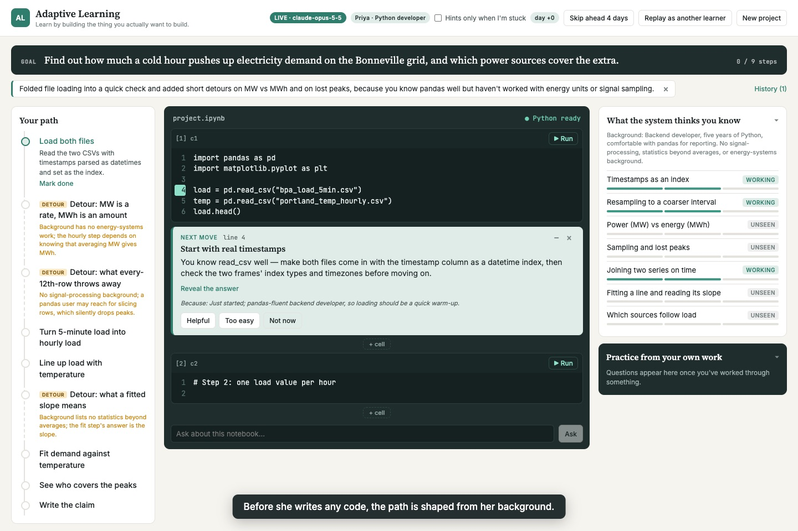
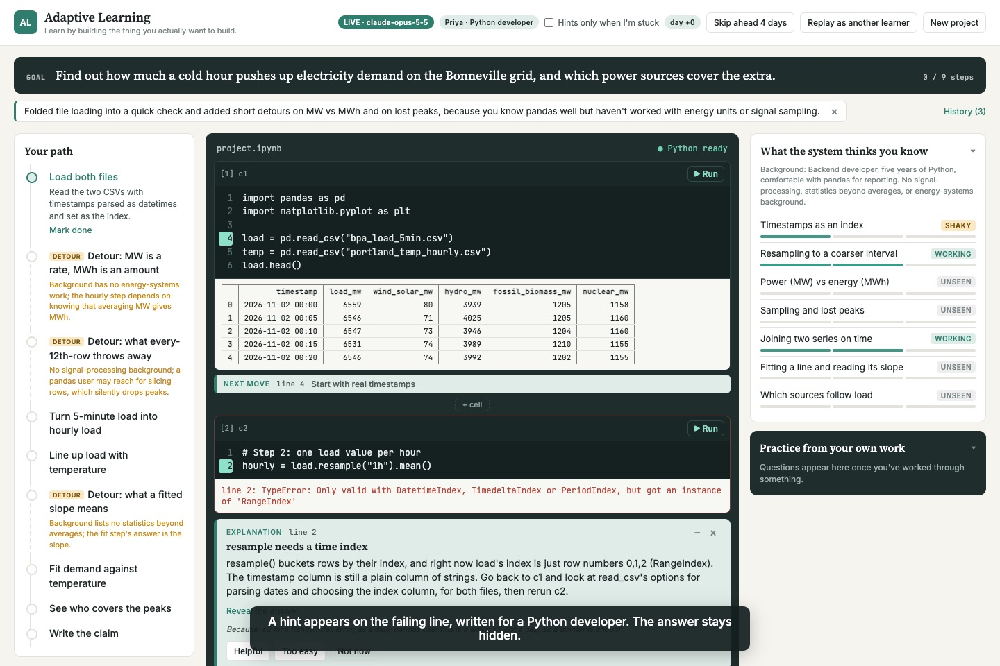
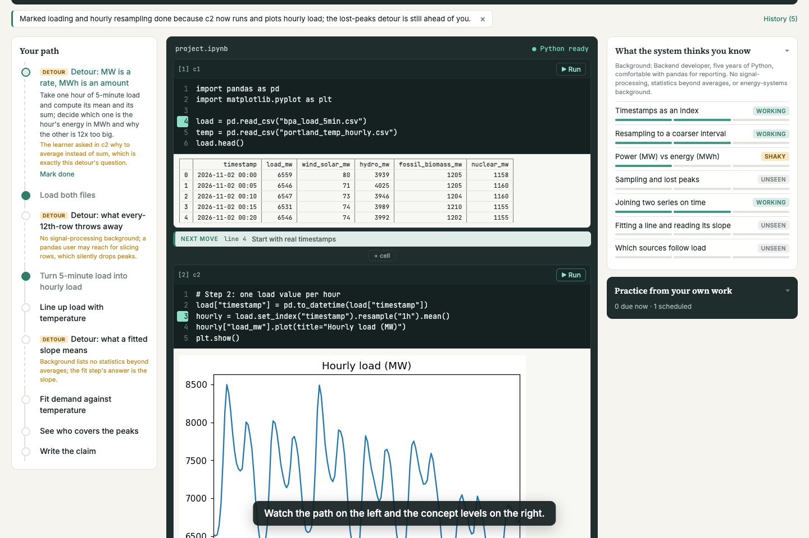
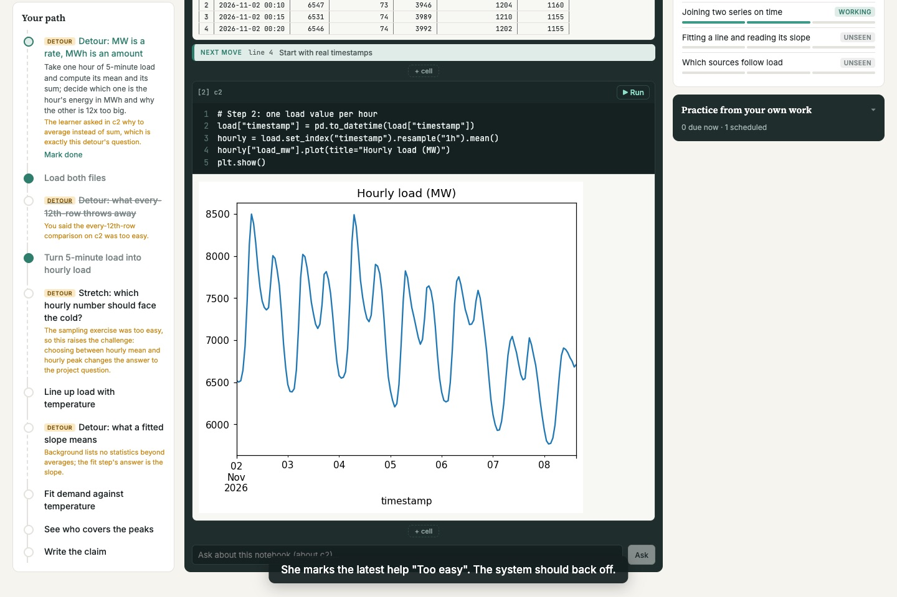
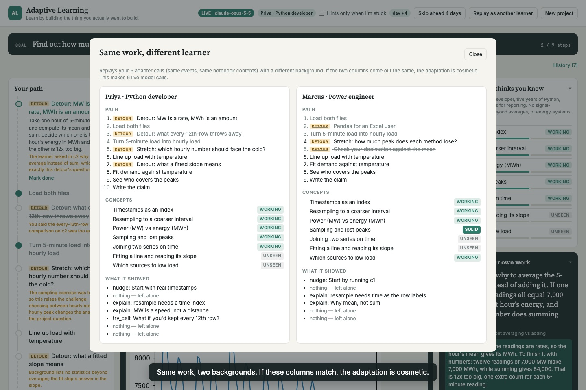

A notebook that adapts to how you work, not just to how you answer questions.
You pick a real project and say what you already know. As you write Python, the notebook watches your runs, errors and questions, and changes the path, the hints and the practice to fit you. Based on Andy Matuschak's essay How Might We Learn?
Try itRuns in your browser. The demo uses real Bonneville Power Administration grid data and Portland temperatures from Nov 2–8, 2026. Model calls are capped per visitor and per day.
A closer look: Priya, a Python developer new to energy data





Two learners, same actions
From the recorded run: Priya's session, then the same events and notebook contents replayed with Marcus's background.
| Priya · Python developer | Marcus · power engineer | |
|---|---|---|
| Side lessons added | MW is a rate, MWh is an amount; what a fitted slope means | Pandas for an Excel user; checking his downsampling against the hourly mean. Both were later skipped once the notebook showed he didn't need them |
| After "Too easy" | Stretch: which hourly number should face the cold? | Stretch: how much peak does each method lose? |
| How MW vs MWh was explained | "MW is a speed, not a distance" | "Why mean, not sum" |
What's still weak: both learners did the same things, so the replay tests background only. The real test is different people working through it in their own way. The "talk to someone" suggestions use made-up people; matching to real people isn't built.